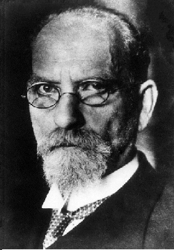

現象学の哲学者。

フッサール。
画像はパブリックドメイン。
自分の書いたブログ「わたしの名はフレイ」2020/09/07より。
フッサールとヤスパースは、現象学の哲学者。
フッサールは、「厳密な科学」によって宇宙や世界のさまざまなことを「意識の現象」であるとする。
ヤスパースは、集団の中で没するのではなく、本来の自分に立ち返ることで、真理を取り戻すことが出来ると考える。
フッサールは、この世界の全てを独自の「現象学」と言う考え方で考える。そこでは、全ては意識の現象である。
フッサールは、さまざまな「思い込み」を排するところから現象学を開始する。
後日注記：現象学は、この世界全てを「意識」とし、常に生まれ滅していく「現象」であると考える学問である。フィヒテやシェリングのようなドイツ観念論にも近い考え方である。フィヒテとシェリングは宇宙の自我のことを「超自我」と考え、シェリングはさらに「宇宙の全ての現象は同じものの現れの違いにすぎない」という同一哲学を考えた。
フッサールは、この世界を数学のような「厳密な科学」によって、捉えることで考える。
後日注記：フッサールは自分の手で宇宙を科学的かつ厳密に考えることにより、現象学を作り出す。まるで、世界の科学を自分の手で再構築するかのようである。
「現象学の理念」、「イデーン」、など。